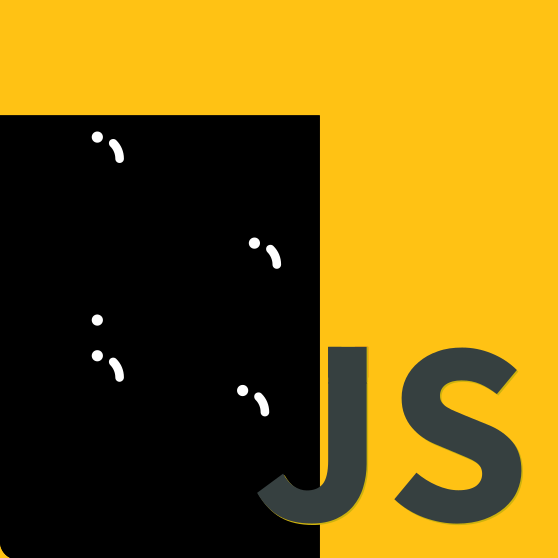

JSCONF 2020
23 juni 2020 - volledige dag - online
Mijn eerste echte actieve IT seminars
Aanloop
IJsconf is een jaarlijks georganiseerd evenement. Dit werd actief gepromoot bij de studenten toegepaste informatica en ik heb er dan ook voor gekozen om mij in te schrijven. Ik kon namelijk alleen maar extra info opdoen en zo mijn JS-skills uitbreiden. Daarom zat ik op 23 juni 2020, enkele dagen na de examens, al opnieuw achter mijn computer om een ganse dag mee te volgen.
Seminars
In totaal heb ik 7 sessies gevolgd, maar in dit blog item zal ik er maar 3 kort bespreken en mijn persoonlijke mening geven.
BREAKOUT: The Operating System of You
De eerste sessie waar ik graag wat aandacht aan wil besteden is een “breakout” sessie, dit is een sessie die minder met het hoofdonderwerp te maken heeft van de conferentie. Deze sessie was “The Operating System of You van Shawn “@swyx” Wang.
Hierin heb ik meer geleerd over mentale en fysieke gezondheid van een programmeur want al dat zitten en kijken naar een scherm is niet zo goed voor het menselijke lichaam. Tijdens deze sessie werd ik nogmaals herinnerd hoe een zeer goede houding belangrijk is. Polsblessures zijn namelijk meer voorkomend dan je zou denken. Zeker door de constant druk die je op je lichaam zet door dagelijks in dezelfde houding te zitten. Daarnaast is het pauzeren en rechtstaan om uit te rekken ook zeer belangrijk, zo breek je wat je houding op en kan je lichaam zich wat ontspannen.
Dit was een zeer verfrissende sessie en aangename sessie die me nog eens zeer goed met de neus op de feiten heeft gedrukt en ervoor heeft gezorgd dat ik tot op de dag van vandaag meer aandacht besteed aan mijn houding.
Rate Limiting in Node.js applications
De volgende sessie die ik kort zou willen bespreken is de sessie “Rate Limiting in Node.js applications” van Forbes Lindesay. Dit is een sessie waar ik zonder al te veel verwachtingen aan begonnen ben, want ik wist wel wat een Node.js applicatie was en ik kon deze maken, maar dat was het ook.
Deze sessie vond ik zeer goed opgebouwd, het begon met wat theorie over wat rate limiting is en wat de voordelen hiervan. Daarnaast had de presentator ook een website voorzien met mooie animaties om alles nog duidelijker te maken. Rate limiting is echt iets zeer handigs om brute force attacks tegen te gaan en deze talk heeft me dus veel meer inzicht gegeven over hoe we deze aanvallen exact tegengaan.
Tijdens zijn presentatie ging de presentator ook over naar zijn code waar hij een voorbeeld gemaakt had waarbij rate limiting gebruikt werd, meer bepaald was het zijn demo met animaties die hij ook al online geplaatst had. Hierbij kon je verschillende soorten rate limiting kiezen en zien hoe deze exacte in te werk gaan.
Deze talk heeft me zeer veel bijgebracht op vlak van bescherming van applicatie waarin je authenticatie gebruikt.
Top JS Exploits And How To Prevent Them
Tot slot wil ook nog kort een de sessie “Top JS Exploits And How To Prevent Them” bespreken van Tim Doherty. Dit was eigenlijk een goede herhalingssessie van het eerste jaar. In deze sessie werden nog eens alle JS exploits uitgelegd en werd ook nog eens benadrukt hoeveel deze nog voorkomen. Deze sessie toonde dus zeer goed aan dat je als programmeur nog altijd moet programmeren met deze exploits in het achterhoofd. Er is namelijk snel een shortcut genomen waardoor je applicatie vulnerable wordt.
Deze sessie was dus ook nog eens een goede opfrisser van wat er allemaal kan fout gaan tijdens het developen en waarvoor we nog steeds moten alert zijn.
Conclusie
JSCONF was voor mij een zeer leerzaam evenement. Ik heb er zeer veel bijgeleerd en ik heb ook nog wat meer inzichten gekregen in de ontwerpen van applicaties. Nu weet ik nog beter hoe ik alles moet aanpakken en nog meer kennis voor mijn verdere loopbaan. Als student heb ik dus zeker genoten van JSCONF. Het was zeker een dag die goed besteed was in mijn ontwikkeling als developer.